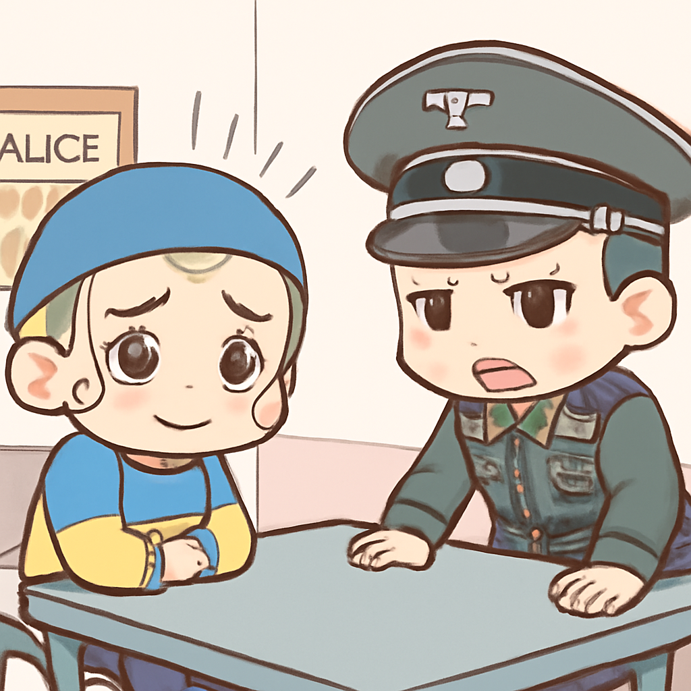
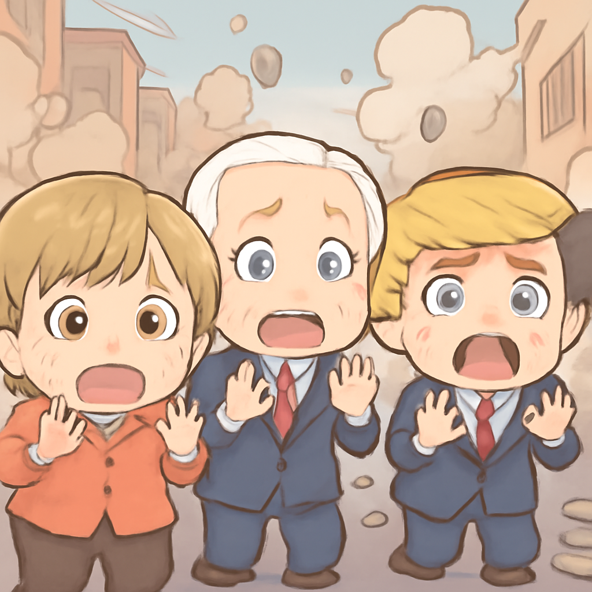

其一 · 委內瑞拉 · 震災後的困境與重建
委內瑞拉面臨嚴重地震後的挑戰。
在委內瑞拉，最近發生的地震造成了嚴重的破壞，死傷人數不斷上升，甚至在港口城市出現了臨時太平間。當地的司法系統已經難以應對不斷增加的屍體數量。這場災難不僅考驗了政府的應變能力，也讓人們重新思考在災後重建中需要的支援和資源。希望未來能緩解這場悲劇帶來的傷痛。
🔗 原始新聞 ↗
2026-07-02 · 以古觀今，以笑抗愁
委內瑞拉面臨嚴重地震後的挑戰。
在委內瑞拉，最近發生的地震造成了嚴重的破壞，死傷人數不斷上升，甚至在港口城市出現了臨時太平間。當地的司法系統已經難以應對不斷增加的屍體數量。這場災難不僅考驗了政府的應變能力，也讓人們重新思考在災後重建中需要的支援和資源。希望未來能緩解這場悲劇帶來的傷痛。
🔗 原始新聞 ↗
美國和伊朗間接會談再度啟動。
美國和伊朗在卡塔爾進行間接會談，這是雙方在近期衝突後的首次接觸。儘管雙方在一些關鍵議題上仍然存在巨大分歧，但增加的海運交通顯示出局勢可能有所緩和。這次會談對於中東地區的穩定可說至關重要，大家都在關注這場外交棋局的進展。
🔗 原始新聞 ↗
德國對涉嫌破壞北溪管道的烏克蘭人提出指控。

在德國，一名烏克蘭籍嫌疑人因涉嫌與北溪管道爆炸有關而被控。這起事件可能對烏克蘭與德國之間的關係造成影響，因為烏克蘭官方已經否認與此事有關。這也讓我們看到，國際間的政治風暴一觸即發，究竟會引發怎樣的後續效應，大家都在靜靜觀察。
🔗 原始新聞 ↗
墨西哥城慶祝活動中發生意外，四人喪生。
在墨西哥城，為了慶祝國家隊在世界盃的勝利，超過百萬人走上街頭，但不幸的是，這場慶祝活動中卻發生了意外，導致四人喪生。這讓人感到既振奮又心痛，勝利的喜悅中夾雜著悲傷，提醒我們慶祝時也要注意安全。
🔗 原始新聞 ↗
希臘發生針對執政黨成員的炸彈襲擊。

在希臘，最近發生了一系列針對執政黨成員的炸彈襲擊事件，導致一名候選人及其家人受傷。這引起了社會的廣泛關注，因為政治暴力的升高不僅威脅到個人安全，也影響到國家的穩定。希望當局能及時採取措施，防止事態進一步惡化。
🔗 原始新聞 ↗